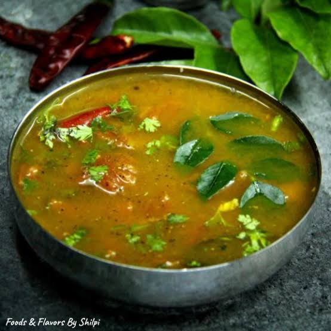

Ingredients:
- ½ cup toor dal
- 2 ripe tomatoes, chopped
- 2 cups water
- 1 tsp tamarind pulp (optional, for extra tanginess)
- 1½ tsp rasam powder
- ½ tsp turmeric powder
- ½ tsp black pepper powder (optional, for spice)
- Salt to taste
- 1 tbsp chopped coriander leaves
For Tempering (Tadka):
- 1 tsp oil or ghee
- ½ tsp mustard seeds
- ½ tsp cumin seeds
- 2 dried red chilies
- 1 sprig curry leaves
- 2 garlic cloves, crushed
- ½ tsp hing (asafoetida)

Instructions:
Cook the Dal:
Pressure cook toor dal with turmeric and water for 3-4 whistles until soft. Mash it well.Prepare Rasam Base:
In a pot, heat water, add chopped tomatoes, tamarind pulp, rasam powder, black pepper powder, and salt. Simmer for 5 minutesAdd Cooked Dal:
Add mashed dal to the pot and mix well. Adjust consistency with water and let it simmer for 5 more minutesPrepare Tempering:
Heat oil/ghee, add mustard seeds, cumin, dried red chilies, curry leaves, crushed garlic, and hing. Fry until fragrant.Combine & Serve:
Pour the tempering into the rasam, mix well, garnish with coriander, and serve hot with rice.
కావలసినవిః
- 3 పండిన టమోటాలు, తరిగిన లేదా గుజ్జు
- 2 కప్పుల నీరు
- 1 టీస్పూన్ చింతపండు గుజ్జు
- ½ స్పూన్ రసం పొడి
- ½ స్పూన్ పసుపు పొడి
- ½ స్పూన్ నల్ల మిరియాల పొడి
- రుచికి ఉప్పు
- 1 టేబుల్ స్పూన్ తరిగిన కొత్తిమీర ఆకులు
తాలింపు కోసం
- 1 స్పూన్ నూనె లేదా నెయ్యి
- ½ స్పూన్ ఆవాలు
- ½ స్పూన్ జీలకర్ర గింజలు
- 2 ఎండిన ఎర్ర మిరపకాయలు
- 1 రెమ్మ కరివేపాకు
- 2 వెల్లుల్లి లవంగాలు
- ½ స్పూన్ హింగ్
పప్పు ఉడికించాలి:
3-4 విజిల్స్ వచ్చే వరకు పసుపు మరియు నీళ్లతో పప్పును ప్రెషర్ కుక్ చేయండి. బాగా మెత్తగా నూరండి.రసం బేస్ సిద్ధం:
ఒక కుండలో, నీటిని వేడి చేసి, తరిగిన టమోటాలు, చింతపండు గుజ్జు, రసం పొడి, నల్ల మిరియాల పొడి మరియు ఉప్పు వేయండి. 5 నిమిషాలు ఆవేశమును అణిచిపెట్టుకోండి.వండిన పప్పు జోడించండి:
కుండలో మెత్తని పప్పు వేసి బాగా కలపాలి. నీటితో స్థిరత్వాన్ని సర్దుబాటు చేయండి మరియు మరో 5 నిమిషాలు ఉడకనివ్వండి.తాలింపు సిద్ధం:
నూనె/నెయ్యి వేడి చేసి, ఆవాలు, జీలకర్ర, ఎండు మిరపకాయలు, కరివేపాకు, దంచిన వెల్లుల్లి, మరియు హింగ్ జోడించండి. సువాసన వచ్చేవరకు వేయించాలికలిపి & సర్వ్:
తాలింపు రసంలో పోసి, బాగా మిక్స్ చేసి, కొత్తిమీరతో అలంకరించి, అన్నంతో వేడిగా సర్వ్ చేయాలి.